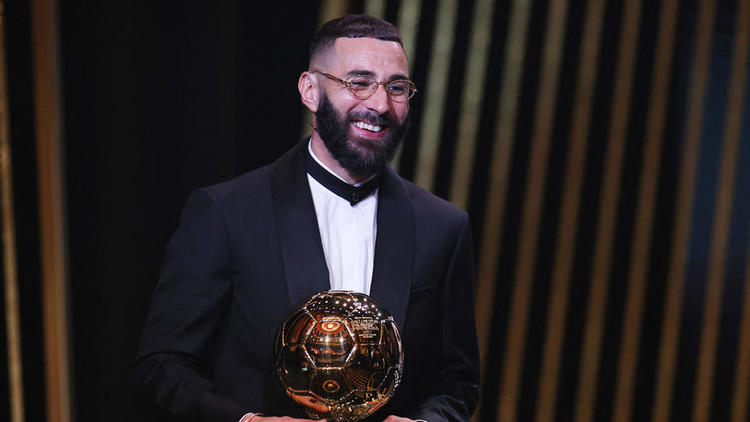

|  |
Karim Benzema (/ka.ʁim bɛn.ze.ma/), surnommé KB9 ou El Nueve en Espagne, né le 19 décembre 1987 à Lyon, est un footballeur international français évoluant au poste d'avant-centre au Real Madrid.
Natif de Lyon, il intègre le centre de formation de l'Olympique lyonnais à l'âge de dix ans et signe son premier contrat professionnel en 2005. Il remporte avec son club formateur de nombreux trophées comme le Championnat de France en 2005, 2006, 2007 et 2008, la Coupe de France en 2008 et le Trophée des champions en 2006 et 2007.
En juillet 2009, il rejoint le club espagnol du Real Madrid pour 35 millions d'euros. Après des débuts compliqués, il s'impose progressivement comme titulaire aux côtés notamment de la star Cristiano Ronaldo, son coéquipier privilégié. Le départ du Portugais en 2018 le fait passer dans une toute autre dimension devenant leader de l'attaque, meilleur buteur puis capitaine de l'équipe. Au cours de son passage madrilène, il remporte quatre Liga, deux Coupes du Roi et est le seul joueur français à avoir gagné cinq Ligues des champions. |